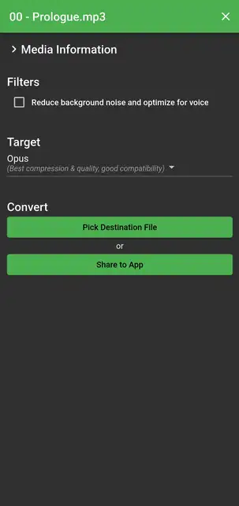
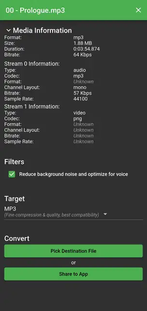

Simple Audio Converter
صوت وفيديو وموسيقى
A simple audio converter app for Android. Intended to be as simple and friendly to use as possible, potentially at the cost of some customisability. If you want a lot of control over all the knobs and dials of the conversion, I recommend looking for another app. Made with Flutter, and uses ffmpeg fo
✓ ترخيص مفتوح (MPL-2.0) · آخر تحديث: 2026-10-06
1.0.5الإصدار
39.8 MBالحجم
MPL-2.0الرخصة
Open in Kanzتحميل APK (39.8 MB)
Download APK
SHA-256: 23145a39ccf7aeda14f60ea2a66ed5d2008f4e3e4c7e4350fa84e787ad3e5310


امسح الكود لفتح صفحة التطبيق
Scan to open this app page
لو كنز مش متثبت عندك: نزّل متجر كنز.
Not installed? Get the Kanz store.